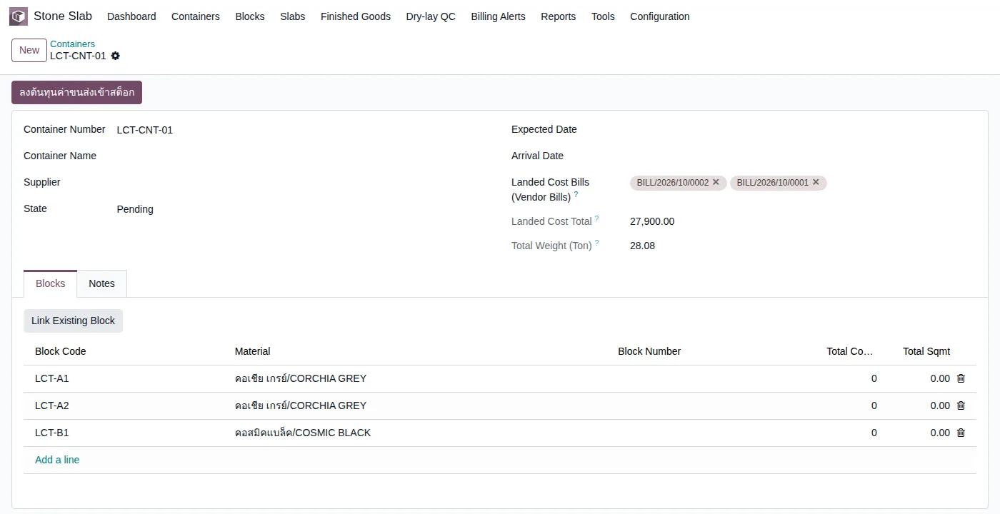
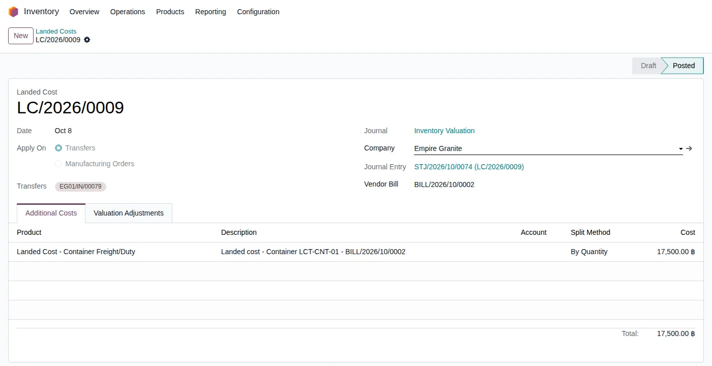
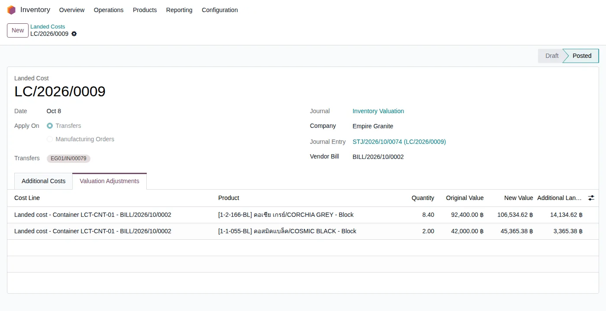

อัปเดตล่าสุด: 8 ตุลาคม 2569 (2026-10-08) · ระบบ stone_slab_inventory เวอร์ชัน 19.0.2.109.1 · ภาพหน้าจอทั้งหมดมาจากการทดลองใช้งานจริงบนระบบทดสอบ เมื่อ 8 ตุลาคม 2569
บทนี้อธิบายเรื่อง Landed Cost (ต้นทุนนำเข้า) ของหินก้อน (Block) ที่มาเป็นตู้คอนเทนเนอร์ ว่าค่าขนส่ง ค่าภาษี ค่าพิธีการ ที่จ่ายแยกต่างหากจากค่าหิน ถูกบวกเข้าต้นทุนของ Block อย่างไร และส่งต่อไปถึงต้นทุนของ Slab ที่ตัดออกมา โดยมีตัวอย่างจริงที่ตู้มีหลายใบแจ้งหนี้ และมีใบหนึ่งเป็นเงินดอลลาร์สหรัฐ (USD)
1. Landed Cost คืออะไร
Landed Cost คือค่าใช้จ่ายที่เกิดขึ้นเพื่อให้หินมาถึงโรงงาน นอกเหนือจากราคาหินในใบสั่งซื้อ เช่น ค่าระวางเรือ ค่าขนส่งในประเทศ อากรขาเข้า ค่าพิธีการศุลกากร ผู้ให้บริการส่งใบแจ้งหนี้ (Vendor Bill) มาแยกต่างหาก มักมาหลังจากรับหินเข้าคลังแล้ว และอาจมาหลายใบ ต่างสกุลเงิน
2. แนวคิดหลัก 6 ข้อ
- Block เข้าคลังด้วยใบรับของจริง ตอนรับของ Block มีมูลค่าเท่าราคาหินก่อน ค่าขนส่งยังไม่เข้า
- ค่าขนส่งมาทีหลังเป็นใบแจ้งหนี้ ผูกใบแจ้งหนี้เข้ากับตู้ แล้วจึงกดลงต้นทุน ไม่ต้องรอให้ครบทุกใบ มาใบไหนลงใบนั้น
- ใบแจ้งหนี้หนึ่งใบ = เอกสาร Landed Cost หนึ่งใบ ตรวจย้อนได้ว่าต้นทุนส่วนเพิ่มนี้มาจากบิลไหน
- แบ่งตามคิว Block ที่ใหญ่กว่าได้ส่วนแบ่งค่าขนส่งมากกว่า (ตามที่ลูกค้ายืนยัน)
- กดซ้ำได้ ไม่ลงซ้ำ บิลที่ลงต้นทุนแล้ว ระบบข้ามให้ ไม่สร้างรายการซ้ำ
- Slab ได้ต้นทุนจาก Block ตอนตัด (Cut Order) ระบบแบ่งมูลค่า Block ให้ Slab ทุกแผ่น มูลค่านี้รวมค่าขนส่งแล้ว (ดูบท 31)
3. ภาพรวมขั้นตอน
4. ขั้นตอนทีละหน้าจอ
4.1 ผูกใบแจ้งหนี้ค่าขนส่งเข้ากับตู้
เมนู Stone Slab → Containers → เปิดตู้ ช่อง Landed Cost Bills (Vendor Bills) เลือกใบแจ้งหนี้ได้หลายใบ ช่อง Landed Cost Total รวมให้เป็นบาททันที ตัวอย่างนี้ตู้ LCT-CNT-01 มี 3 Block และ 2 บิล: บิลแรก 10,400 บาท บิลที่สองเป็น USD (ก่อนภาษี 500 USD อัตรา 35 บาทต่อ USD = 17,500 บาท) รวม 27,900 บาท

4.2 กดปุ่มลงต้นทุน
ปุ่ม ลงต้นทุนค่าขนส่งเข้าสต็อก อยู่มุมซ้ายบนของหน้าตู้ (เห็นเมื่อมีบิลผูกอยู่) กดแล้วระบบสร้างเอกสาร Landed Cost ให้ 1 ใบต่อบิล คำนวณ และยืนยัน (Posted) ทันที ใบเอกสารอ้างถึงบิลต้นทาง ใบรับของที่ได้รับผลกระทบ และรายการบัญชี

4.3 ตรวจว่าแต่ละ Block ได้ค่าขนส่งเท่าไร
เมนู Inventory → Operations → Landed Costs → เปิดเอกสาร → แท็บ Valuation Adjustments แสดงมูลค่าเดิม มูลค่าใหม่ และส่วนที่เพิ่มของแต่ละ Block บิลแรก (10,400 บาท) แบ่งตามคิว 8.40 : 2.00
บิลที่สอง (USD → 17,500 บาท) แบ่งด้วยสัดส่วนเดียวกัน และบวกต่อจากมูลค่าที่เพิ่มขึ้นแล้วจากบิลแรก

| Block | คิว | ราคาหินเดิม | บิล 1 (บาท) | บิล 2 (USD) | มูลค่าสุดท้าย |
|---|---|---|---|---|---|
| CORCHIA GREY | 8.40 | 84,000.00 | +8,400.00 | +14,134.62 | 106,534.62 |
| COSMIC BLACK | 2.00 | 40,000.00 | +2,000.00 | +3,365.38 | 45,365.38 |
| รวม | 10.40 | 124,000.00 | +10,400.00 | +17,500.00 | 151,900.00 |
4.4 ผลต่อบัญชี
แต่ละเอกสาร Landed Cost สร้างรายการบัญชีสมุด Inventory Valuation: เดบิตสินค้าคงเหลือ (113120) เครดิตบัญชีค่าขนส่งที่บิลลงไว้ (511100) ทำให้ค่าขนส่งที่บิลบันทึกเป็นค่าใช้จ่ายถูกหักล้างออก และไปอยู่ในมูลค่าสต็อกแทน
4.5 ตัด Block เป็น Slab — ต้นทุน Slab รวมค่าขนส่ง
เมื่อสร้างใบตัด (Cut Order) ต้นทุนของ Slab ทุกแผ่นมาจากมูลค่า Block ณ ตอนตัด ซึ่ง รวมค่าขนส่งแล้ว บวกค่าแรงตัด (ขั้นตอน Gangsaw) ที่เกิดขึ้นจริง
5. สรุปเงื่อนไข
| สถานการณ์ | ระบบทำอย่างไร |
|---|---|
| ตู้มีหลายบิล | ลงต้นทุนทีละบิล แต่ละบิลได้เอกสาร Landed Cost ของตัวเอง ยอดรวมบนตู้บวกทุกบิล |
| บิลเป็น USD | แปลงเป็นบาทตามอัตราของวันที่บิล แล้วจึงแบ่ง (ทดลองจริง 500 USD → 17,500 บาท) |
| ตู้มี Block จากหลายใบสั่งซื้อ (หลายใบรับของ) | ค่าขนส่งแบ่งให้ทุก Block ตามคิวรวมกัน |
| กดปุ่มซ้ำ | ข้ามบิลที่ลงแล้ว ไม่ลงซ้ำ |
| บิลยังไม่ Post หรือถูกยกเลิก | ไม่ลงต้นทุน (บิลยกเลิกไม่นับในยอดรวมตู้) |
| ใบรับของมี Block ของตู้อื่นปนอยู่ด้วย | ระบบข้ามใบรับของนั้นและแจ้งเตือน ต้องทำ Landed Cost เองด้วยมือ (ผลจากการทดสอบอัตโนมัติ) |
| ตู้มี Block แค่บางส่วนในใบรับของ | ระบบลงเฉพาะสัดส่วนคิวของ Block ในตู้นั้น |
| Block ถูกตัดหรือขายไปแล้วก่อนบิลมา | ส่วนของสต็อกที่ออกไปแล้วเข้าต้นทุนขาย (COGS) ของงวดที่ลงบิล ลูกค้ายอมรับแบบนี้ไปก่อน รอฝ่ายบัญชียืนยัน |
6. สิ่งที่เปลี่ยนจากเดิม
| เดิม | ตอนนี้ |
|---|---|
| ผูกบิลกับตู้ได้ใบเดียว | ผูกได้หลายใบ ยอดรวมทุกใบ |
| บิล USD ถูกอ่านเป็นบาท (500 USD กลายเป็น 500 บาท) | แปลงตามอัตราจริงเป็นบาท |
| ค่าขนส่งแสดงบนตู้ แต่ไม่เข้ามูลค่า Block ที่รับด้วยใบรับของ ต้นทุน Slab จึงไม่รวมค่าขนส่ง | กดปุ่มแล้วเข้ามูลค่า Block และต้นทุน Slab |
| ไม่มีเอกสารให้ตรวจย้อนว่าต้นทุนเพิ่มมาจากบิลไหน | มี Landed Cost ต่อบิล อ้างถึงบิลและใบรับของ |
7. คำถามที่พบบ่อย
ถามว่า ต้องรอบิลครบก่อนกดไหม? ไม่ต้อง กดเมื่อมีบิลใหม่ได้ทุกครั้ง ระบบลงเฉพาะบิลที่ยังไม่ได้ลง
ถามว่า ทำไมตู้เก่าที่มีบิลอยู่แล้วต้นทุนยังไม่เข้า? ตู้ที่ผูกบิลไว้ก่อนระบบนี้ ต้นทุนยังไม่เข้ามูลค่า Block ให้เปิดตู้แล้วกดปุ่มหนึ่งครั้ง (ตู้ LCT-CNT-01 ทำแล้ว) ระบบย้ายบิลเดิมมาเก็บในช่องใหม่ให้อัตโนมัติ แต่ไม่ลงต้นทุนเอง
ถามว่า อยากแบ่งตามน้ำหนักหรือมูลค่าแทนคิวได้ไหม? ตอนนี้แบ่งตามคิวอย่างเดียว ตามที่ลูกค้ายืนยัน
ถามว่า ค่าขนส่งในเอกสารรับของ (Receipt) ไม่เห็นเลขต้นทุน? หน้าใบรับของและ Moves ไม่แสดงมูลค่า ให้ดูที่ Landed Costs → Valuation Adjustments
8. ข้อจำกัดที่ทราบ
- เพิ่ม Block เข้าตู้ หลัง ที่ลงต้นทุนไปแล้ว ระบบไม่ลงต้นทุนย้อนหลังให้ Block ใหม่อัตโนมัติ ยังไม่ได้ทดลอง
- ใบรับของที่มี Block หลายตู้ปนกัน ต้องทำ Landed Cost เองด้วยมือ
- บิลที่มาหลัง Block ถูกตัดหรือขายแล้ว ส่วนนั้นเข้า COGS ไม่ย้อนไปแก้ต้นทุน Slab ที่ตัดไปแล้ว รอฝ่ายบัญชีของลูกค้ายืนยัน
- ต้นทุน Slab ที่รวมค่าขนส่ง ยืนยันด้วยชุดทดสอบอัตโนมัติ ยังไม่ได้เดินหน้าจอจริงตั้งแต่ตัดจนขาย
- แบ่งตามคิวอย่างเดียว ไม่มีตัวเลือกแบ่งตามน้ำหนักหรือมูลค่า